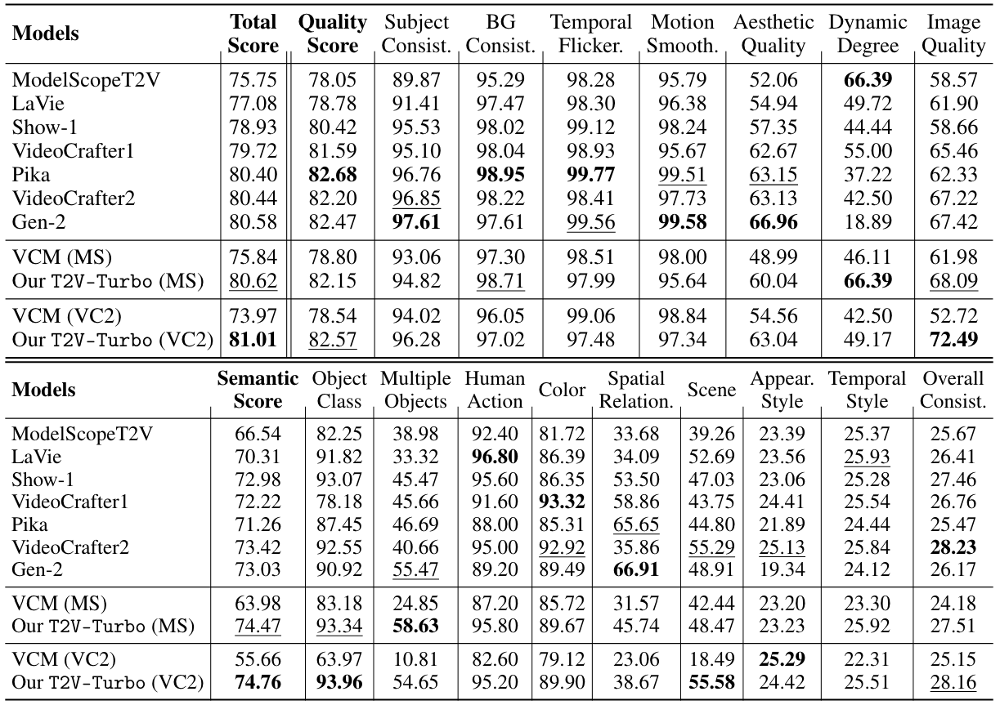
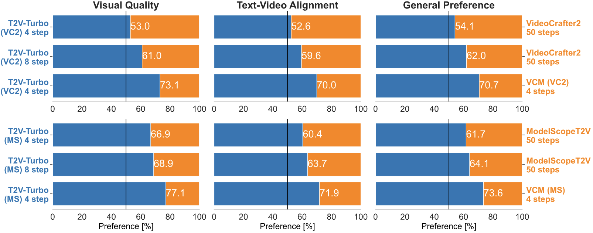

Overview of Training Pipeline

Overview of the training pipeline of our T2V-Turbo. We integrate reward feedback from both an image-text RM and a video-text RM into the VCD procedures by backpropagating gradient through the single-step generation process of our T2V-Turbo
Automatic Evaluation on VBench
We compare our T2V-Turbo (VC2) and T2V-Turbo (MS) with baseline methods across the 16 VBench dimensions. A higher score indicates better performance for a particular dimension. We bold the best results for each dimension and underline the second-best result. Quality Score is calculated with the 7 dimensions from the top table. Semantic Score is calculated with the 9 dimensions from the bottom table. Total Score a weighted sum of Quality Score and Semantic Score. Both our T2V-Turbo (VC2) and T2V-Turbo (MS) surpass all baseline methods with 4 inference steps in terms of Total Score, including the proprietary systems Gen-2 and Pika
Human Evaluation Results with 700 EvalCrafter Prompts
We compare the 4-step and 8-step generations from our T2V-Turbo with their teacher T2V model and their baseline VCM. Top: results for T2V-Turbo (VC2). Bottom: results for T2V-Turbo (MS).
Notably, the 4-step generations from our T2V-Turbo are favored by humans over the 50-step generation from their teacher T2V model, representing a 12.5 times inference acceleration with improving performance.
By increasing the inference steps to 8, we can further improve the visual quality and text-video alignment of videos generated from our T2V-Turbo.
Additionally, our T2V-Turbo significantly outperforms its baseline VCM, demonstrating the effectiveness of methods that incorporate a mixture of reward feedback into the model training.
Acknowledgement
This project would not be possible without the following wonderful prior work.
Latent Consistency Model gave inspiration to our method, HPSv2.1, ViCLIP and InternVid2 provide great reward models, and Diffusers🧨 offered a strong diffusion model training framework for building our code from.
BibTeX
@misc{li2024t2vturbo,
title={T2V-Turbo: Breaking the Quality Bottleneck of Video Consistency Model with Mixed Reward Feedback},
author={Jiachen Li and Weixi Feng and Tsu-Jui Fu and Xinyi Wang and Sugato Basu and Wenhu Chen and William Yang Wang},
journal={ARXIV},
year={2024}
}